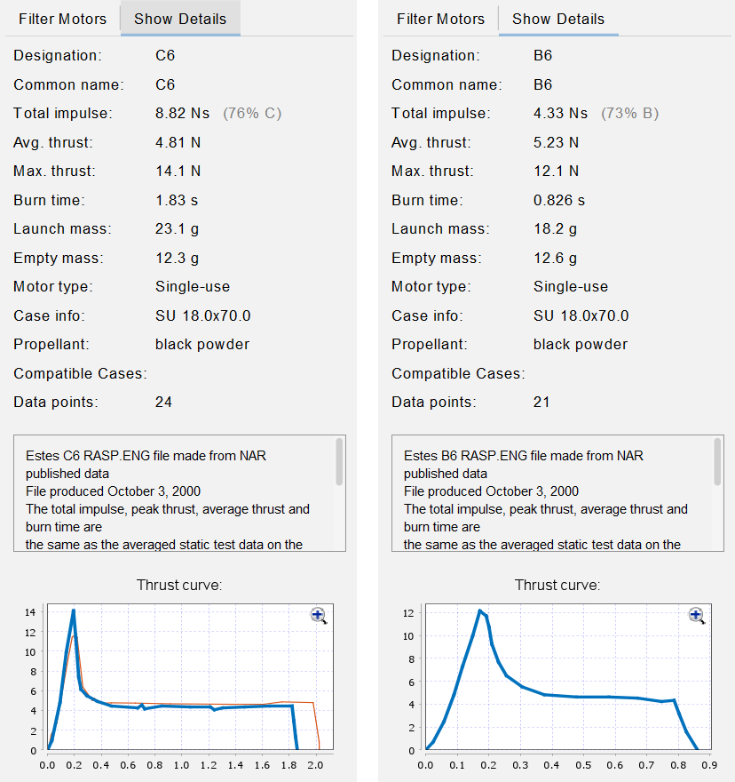
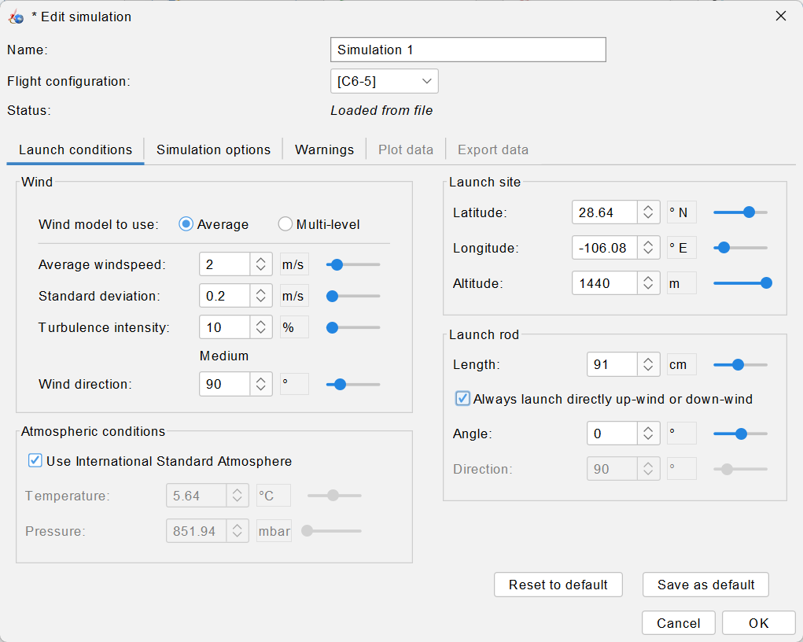
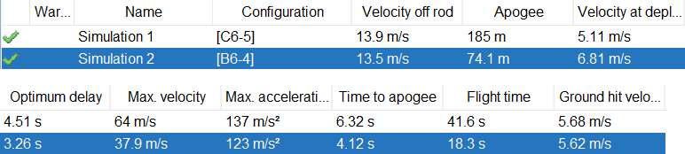
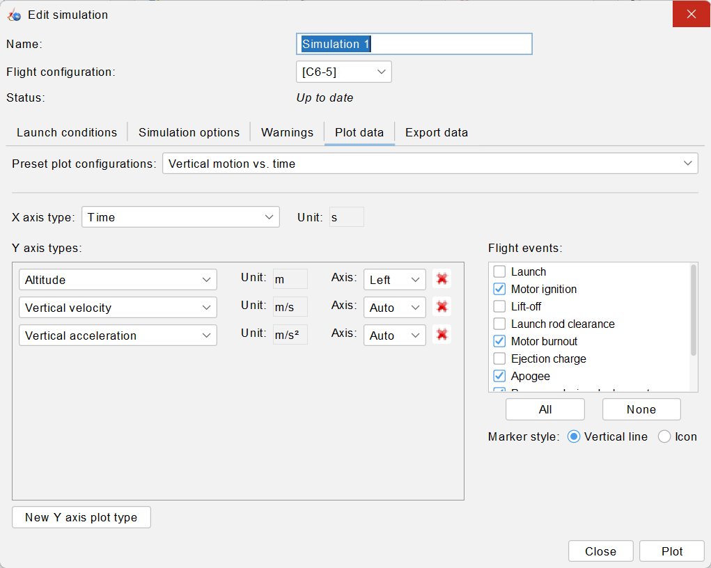
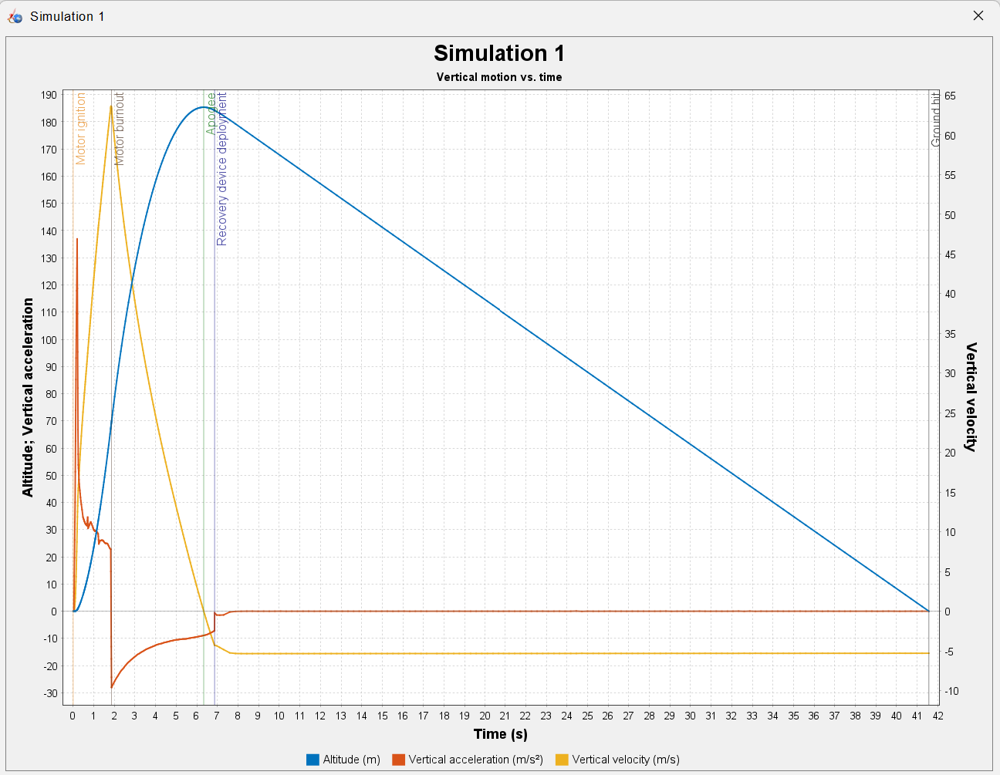
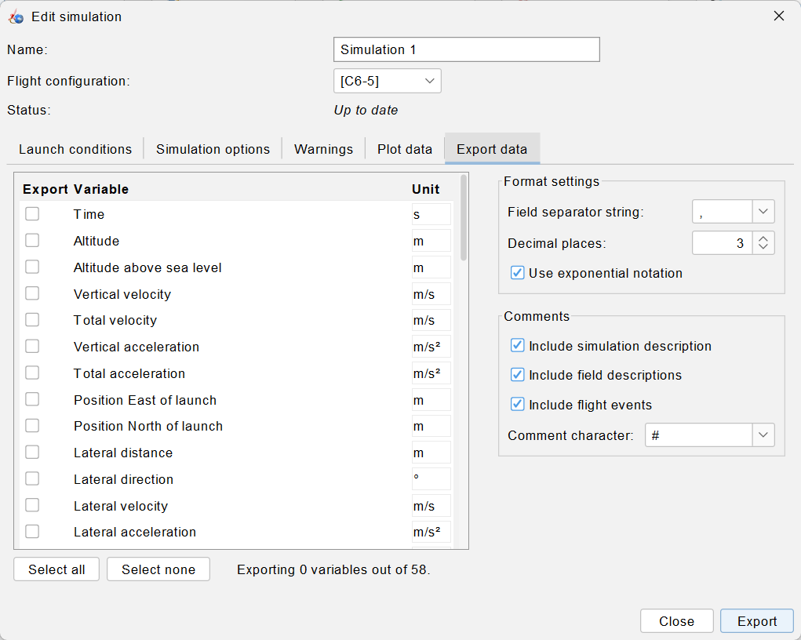
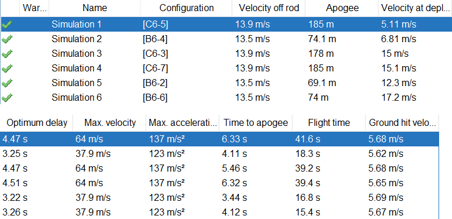

The Motor and the Flight: Simulating Estes B and C Motors
The rocket of Tutorial 1.1 now flies. OpenRocket integrates the motor's thrust curve, the drag and the parachute from the launch site to the ground; the task is to set the conditions of the real launch, read what the simulation returns and decide which ejection delay to buy.
OpenRocket · Tutorial 1.2
El motor y el vuelo: simulación con motores Estes B y C
El cohete del tutorial 1.1 ahora vuela. OpenRocket integra la curva de empuje del motor, el arrastre y el paracaídas desde la varilla hasta el suelo; el trabajo es poner las condiciones del lanzamiento real, leer lo que devuelve la simulación y decidir qué retardo de expulsión comprar.
OpenRocket · Tutorial 1.2
Motor und Flug: Simulation mit Estes-Motoren B und C
Die Rakete aus Tutorial 1.1 fliegt jetzt. OpenRocket integriert die Schubkurve des Motors, den Luftwiderstand und den Fallschirm vom Startstab bis zum Boden; die Aufgabe ist, die Bedingungen des echten Starts einzustellen, die Simulation zu lesen und die passende Ausstoßverzögerung zu wählen.
Estimated reading: 45 minLectura estimada: 45 minLesedauer: ca. 45 minLevel: undergraduateNivel: licenciaturaNiveau: BachelorVerified on OpenRocket 24.12 (Windows 11)Verificado en OpenRocket 24.12 (Windows 11)Geprüft mit OpenRocket 24.12 (Windows 11)
Full English translation in preparation. Each section below carries a summary of its content; the complete text, figures and tables are available in the Spanish version, which the ES button above selects.
Read the motor data OpenRocket uses, set the launch conditions of the real site (Chihuahua, 1440 m, a 91 cm rod), run and read the simulations, plot and export a full flight, check the descent rate with a formula, choose the ejection delay and judge the flight against safety criteria.
The idea
Three stretches: thrust, coast and descent
The flight has three stretches: the motor burns (under 2 s), the rocket coasts to apogee slowed by gravity and drag, and it descends under the parachute at a constant rate. Without drag the C6-5 would leave the motor at 78 m/s and climb to 274 m; OpenRocket gives 64 m/s and 185 m. The descent rate follows v = √(2mg/(ρ C_D A)).
Step 1
What OpenRocket knows about an Estes B6 and C6
Show Details in the motor dialog gives the real data: the Estes C6 delivers 8.82 N·s in 1.83 s and the B6 4.33 N·s in 0.826 s; the list rounds the impulse to the class. The C6 is sold with delays of 0, 3, 5 and 7 s; the B6 with 0, 2, 4 and 6 s.
Step 2
The place and the day of the launch
OpenRocket starts with Cape Canaveral at sea level and a 1 m rod. Here the site is Chihuahua at 1440 m with the 91 cm Estes rod; the standard atmosphere then gives 5.64 °C and 851.94 mbar.
Step 3
Running the simulation and reading its table
OK runs the simulation. At 1440 m the C6-5 reaches 185 m (175 m at sea level) and the B6-4 74 m; the rocket leaves the rod at about 14 m/s and lands at 5.7 m/s.
Step 4
The plot and the flight events
Plot data draws altitude, velocity and acceleration against time with the flight events: lift-off, rod clearance, burnout, apogee, ejection, deployment and ground hit.
Step 5
Exporting the data and checking the descent
Export data writes all 58 variables to CSV (select all and raise the decimals to 6). With them the descent formula gives a parachute drag coefficient of 0.80, OpenRocket's own value; the stability margin drops to about 1 caliber as the rocket leaves the rod in a crosswind.
Step 6
Choosing the ejection delay
With delays one step shorter or longer the parachute opens at 12–17 m/s, rising or falling; C6-5 and B6-4 open it 0.5–0.7 s after apogee at 5–7 m/s and are the right choice.
Step 7
Is it a safe flight?
The NAR safety code asks for a field of 61 m (B) or 122 m (C) and winds under 20 mph. The rod exit speed, 13.5–13.9 m/s, is slightly below the 15 m/s rule of thumb.
Suggested practice
A hot afternoon
Simulate a hot afternoon (30 °C, 850 mbar) instead of the standard atmosphere and predict the change in descent rate with the formula before running it.
Key points
What to keep from this guide
Launch conditions are part of the model; each configuration has its own simulation; data are exported, not read off the plot; the delay is chosen from the optimum delay.
Common mistakes
Where OpenRocket does not do what one expects
Keeping Cape Canaveral, editing one simulation and not the others, exporting with zero variables or three decimals, taking ground-hit velocity as the descent rate, and trusting the impulse column of the motor list.
Sources
References
OpenRocket documentation; Niskanen (2009); NAR Model Rocket Safety Code; Estes motor data; ThrustCurve.org.
Objetivos de aprendizaje
Qué se debe poder hacer al terminar
El tutorial 1.1 dejó armado el cohete del proyecto, con sus masas reales y un margen de estabilidad de 1.45 calibres con el motor C6-5. Esta guía lo hace volar: OpenRocket simula el vuelo completo, desde la varilla hasta el suelo, y la tarea es darle las condiciones del lanzamiento real y leer con criterio lo que devuelve. Al terminar debe ser posible:
Leer en OpenRocket los datos de un motor (impulso total, duración de la combustión, retardos que se venden) y distinguirlos de lo que dice su nombre.
Poner las condiciones de lanzamiento del lugar real: altitud, varilla y atmósfera.
Correr las simulaciones y explicar cada columna de su tabla.
Graficar un vuelo, ubicar sus eventos y exportar sus datos para trabajarlos fuera del programa.
Comprobar la velocidad de descenso con una fórmula y los datos exportados.
Elegir el retardo de la carga de expulsión y revisar el vuelo contra los criterios de seguridad.
Qué hace falta. OpenRocket 24.12 y el diseño del tutorial 1.1, propio o el de la guía (cohete-ejemplo.ork). El diseño con todo lo de esta guía, las seis configuraciones de motor y sus simulaciones en Chihuahua, también se puede descargar: cohete-vuelo.ork.
La idea
Tres tramos: empuje, inercia y descenso
El vuelo de un cohete de modelismo tiene tres tramos, y cada uno lo gobierna una cosa distinta (figura 1):
El tramo propulsado, mientras el motor quema: menos de 2 s. Lo gobierna el impulso total del motor, el área bajo su curva de empuje.
El tramo de inercia, del apagado al apogeo: el cohete sube con la velocidad que ganó, frenado por la gravedad y por el arrastre del aire. Al final, el motor dispara la carga de expulsión, que saca la nariz y el paracaídas; el tiempo entre el apagado y esa carga es el retardo, el último número del nombre del motor.
El descenso: con el paracaídas abierto, el cohete cae a velocidad casi constante.
Figura 1.El vuelo del cohete del 1.1 desde Chihuahua. Altura contra tiempo con el C6-5 (azul) y el B6-4 (naranja), según los datos exportados de OpenRocket. Los círculos marcan el apagado del motor y la apertura del paracaídas. El tramo propulsado dura menos de 2 s; el resto del ascenso es inercia, y el descenso es casi una recta: la velocidad de caída es constante.
Cuánto quita el aire
Sin arrastre, la velocidad al apagarse el motor se estima dividiendo el impulso entre la masa media y restando lo que la gravedad quita durante la combustión:
Para el C6, con \(I\) = 8.82 N·s, \(t_b\) = 1.83 s y una masa que baja de 97.09 a 86.29 g (media de 91.7 g), la ecuación da \(96.2 - 17.9 = 78.3\) m/s. La simulación da 63.3 m/s al apagado: el aire ya quitó el 19 % (con el B6, 40.3 contra 37.6 m/s, el 7 %, porque vuela más despacio). Después del apagado, sin arrastre, el cohete subiría todavía
\[ h \;=\; \frac{v_b^{2}}{2g} \qquad (2) \]
es decir, 205 m más sobre los 69.7 m a los que se apaga el C6: un apogeo de 274 m. OpenRocket da 185.4 m. El aire se lleva cerca de un tercio de la altura, y como el arrastre cambia con la velocidad a lo largo de todo el ascenso, el apogeo no se puede estimar a mano con precisión: hace falta la simulación.
Por qué el descenso es una recta
Con el paracaídas abierto, el arrastre crece con el cuadrado de la velocidad hasta igualar al peso. Desde ese momento la velocidad ya no cambia:
con \(m\) la masa del cohete con el motor vacío, \(\rho\) la densidad del aire, \(A\) el área del paracaídas y \(C_D\) su coeficiente de arrastre. La ecuación dice dos cosas que importan en el proyecto: un paracaídas más grande baja la velocidad sólo con la raíz de su área, y en un lugar alto, con aire menos denso, el cohete cae más rápido. En el paso 5 se comprueba con los datos de la simulación.
Paso 1
Lo que OpenRocket sabe de un Estes B6 y un C6
El nombre de un motor Estes resume tres datos: en C6-5, la letra es la clase de impulso total (la C va de 5 a 10 N·s, la B de 2.5 a 5), el 6 es el empuje medio nominal en newtons y el 5, el retardo en segundos. Lo que usa la simulación no es el nombre, sino la curva de empuje medida del motor. Para verla:
Abrir el diseño del tutorial 1.1 y pasar a la pestaña Motors & Configuration.
Seleccionar la configuración [C6-5] y hacer clic en Select motor. Se abre Select a rocket motor con el Estes C6 elegido.
A la derecha, pasar de Filter Motors a Show Details: aparecen el impulso total, los empujes medio y máximo, la duración, las masas y, abajo, la curva de empuje.
Abrir la lista Ejection charge delay: muestra los retardos con que se vende el motor.
Cerrar el cuadro con la X de su esquina: así no cambia nada. Repetir con [B6-4].

Figura 2.Lo que OpenRocket sabe de cada motor. Pestaña Show Details del cuadro Select a rocket motor, con el Estes C6 (izquierda) y el B6 (derecha) elegidos. El impulso total va con el porcentaje de su clase: el C6 llena el 76 % del intervalo de la clase C, de 5 a 10 N·s. Abajo, la curva de empuje del archivo de la NAR.
Estes C6
Estes B6
Impulso total
8.82 N·s (76 % C)
4.33 N·s (73 % B)
Empuje medio
4.81 N
5.23 N
Empuje máximo
14.1 N
12.1 N
Duración de la combustión
1.83 s
0.826 s
Masa al despegar
23.1 g
18.2 g
Masa vacía
12.3 g
12.6 g
Retardos en la lista
0, 3, 5, 7 y Plugged
0, 2, 4, 6 y Plugged
Tabla 1.Los dos motores del proyecto. Datos de Show Details en OpenRocket 24.12. El impulso es el de la curva de empuje que usa la simulación (integrar la columna Thrust exportada da 8.82 y 4.33 N·s); el nominal de la caja es el tope de la clase.
Figura 3.Las dos curvas de empuje. Empuje contra tiempo, tomado de la columna Thrust de los datos exportados. Los dos motores tienen el pico del encendido, de 12 a 14 N; después, el C6 sostiene unos 4 N durante más del doble de tiempo que el B6. El área bajo cada curva es el impulso total.
Dos detalles de la tabla 1. Primero, el impulso real queda por debajo del tope de la clase: el C6 tiene 8.82 N·s, no 10. Segundo, el «6» de los dos nombres no es el empuje medio que mide la curva: el del C6 es menor que el del B6, aunque los dos se llamen «6», porque la combustión del C6 dura más del doble.
La lista de motores redondea. La columna Total Impulse de la lista muestra 10 para el C6 y 4 para el B6: es la clase, redondeada. El valor que usa la simulación está en Show Details. Además, al hacer clic en la fila del B6, OpenRocket cambió el retardo a 6, el mayor de la lista: después de elegir un motor hay que revisar el retardo.
Paso 2
El lugar y el día del lanzamiento
Cada configuración de motor tiene su simulación, y cada simulación, sus condiciones de lanzamiento. Las que trae OpenRocket son las de Cabo Cañaveral, en Florida, al nivel del mar. El proyecto se lanza en Chihuahua, a unos 1440 m: el aire es un 13 % menos denso.
Pestaña Flight simulations. Ya hay dos simulaciones, una por configuración, creadas al elegir los motores en el 1.1.
Seleccionar Simulation 1 (la del [C6-5]) y hacer clic en Edit simulation. Se abre con la pestaña Launch conditions.
En Launch site: Latitude 28.64, Longitude −106.08 y Altitude 1440. La temperatura y la presión de Atmospheric conditions cambian solas a 5.64 °C y 851.94 mbar: son las de la atmósfera estándar a esa altitud.
En Launch rod: Length 91 cm, la varilla de 1/8 in que trae la plataforma Porta-Pad II de Estes (36 in). Angle se queda en 0, vertical.
El viento (Average windspeed 2 m/s, con 10 % de turbulencia) se deja como está.
OK. Repetir con Simulation 2, la del [B6-4].

Figura 4.Las condiciones de lanzamiento.Edit simulation ▸ Launch conditions con el lugar de lanzamiento en la ciudad de Chihuahua (1440 m) y la varilla de 91 cm. Con Use International Standard Atmosphere marcado, la temperatura y la presión (en gris) salen de la altitud: 5.64 °C y 851.94 mbar.
Campo
Por omisión
Esta guía
Por qué
Latitude, Longitude
28.61, −80.6 (Cabo Cañaveral)
28.64, −106.08 (ciudad de Chihuahua)
casi no cambian el vuelo; ubican el lugar
Altitude
0 m
1440 m
el aire es menos denso
Launch rod ▸ Length
100 cm
91 cm
la varilla de 1/8 in del Porta-Pad II de Estes mide 36 in
Average windspeed
2 m/s
2 m/s
se conserva
Temperatura y presión (ISA)
15 °C, 1013.25 mbar
5.64 °C, 851.94 mbar
las calcula OpenRocket
Tabla 2.Las condiciones que trae OpenRocket y las de esta guía. La temperatura y la presión salen de la atmósfera estándar a la altitud del lugar. El viento se deja en el valor de omisión; su efecto es el tema del tutorial 1.3.
El lugar real de cada equipo. Si el lanzamiento será en otro sitio, se escriben su latitud, su longitud y su altitud; la altitud es lo único que cambia el vuelo de manera apreciable. Save as default guarda estas condiciones para todas las simulaciones nuevas; esta guía no lo usa, para que se vea qué pasa sin él (paso 6).
Paso 3
Correr la simulación y leer su tabla
Al dar OK en Edit simulation, OpenRocket corre la simulación: no hace falta el botón Run simulations, que sirve para volver a correr las que se seleccionen. La tabla de la pestaña se llena con el resumen de cada vuelo.

Figura 5.La tabla de simulaciones. Pestaña Flight simulations después de correr las dos simulaciones en Chihuahua. Cada fila es un vuelo completo; la marca verde de la izquierda dice que la simulación está al día con el diseño.
La tabla se puede copiar como texto: hacer clic en ella, Ctrl+A y Ctrl+C. Sale separada por comas, con todos los decimales y las unidades en los encabezados; de ahí salen las cifras de esta guía.
Columna
Significado
Chihuahua, 1440 m
Nivel del mar
Velocity off rod
velocidad al salir de la varilla
13.9 / 13.5 m/s
14.5 / 14.0 m/s
Apogee
altura máxima sobre el lugar
185.4 / 74.1 m
174.8 / 71.5 m
Velocity at deployment
velocidad cuando se abre el paracaídas
5.1 / 6.8 m/s
6.6 / 7.3 m/s
Optimum delay
retardo que abriría el paracaídas justo en el apogeo
4.51 / 3.26 s
4.28 / 3.20 s
Max. velocity
velocidad máxima, al apagarse el motor
64.0 / 37.9 m/s
62.4 / 37.6 m/s
Max. acceleration
aceleración máxima, en el pico del empuje
137 / 123 m/s²
137 / 123 m/s²
Time to apogee
tiempo del encendido al apogeo
6.32 / 4.12 s
6.14 / 4.01 s
Flight time
duración del vuelo completo
41.6 / 18.3 s
41.6 / 18.6 s
Ground hit velocity
velocidad al tocar el suelo, con el viento
5.68 / 5.62 m/s
5.33 / 5.21 m/s
Tabla 3.Qué dice cada columna de la tabla de simulaciones. Cifras con el C6-5 y el B6-4 (en ese orden), copiadas de la tabla con Ctrl+A y Ctrl+C. La última columna es la de las condiciones de omisión (nivel del mar, varilla de 1 m), con las que se guardó el diseño del 1.1.
Con el aire de Chihuahua, el C6-5 sube a 185.4 m, un 6 % más que al nivel del mar, y el B6-4 a 74.1 m (4 % más). La velocidad al dejar la varilla bajó de 14.5 a 13.9 m/s con el C6-5 por otra razón: la varilla es 9 cm más corta. Y el cohete toca el suelo más rápido, 5.68 m/s contra 5.33: con aire menos denso, el paracaídas frena menos (ecuación 3).
Dos corridas no dan exactamente lo mismo. El viento lleva turbulencia aleatoria. Volver a correr la misma simulación con Run simulations cambió el apogeo del C6-5 en milímetros (de 185.356 a 185.358 m), pero la misma simulación hecha de nuevo desde el diseño del 1.1, en el vídeo de esta guía, dio 185.7 m de apogeo y 4.9 m/s al abrir, contra 185.4 y 5.1 de la tabla 3. La velocidad al abrir es la que más cambia, porque depende de dónde cae el apogeo dentro del retardo. Por eso las cifras se citan con uno o dos decimales, no con seis, y una diferencia de unas décimas entre dos equipos no significa que un diseño sea mejor.
Paso 4
La gráfica y los eventos del vuelo
Seleccionar Simulation 1 y hacer clic en Plot / Export. Se abre la simulación en la pestaña Plot data.
Dejar la configuración predefinida, Vertical motion vs. time. En Flight events se marcan los eventos que se quieren ver como líneas verticales (All los marca todos).
Plot. Se abre la gráfica en una ventana aparte.

Figura 6.Qué se grafica.Plot / Export abre la simulación en la pestaña Plot data. La configuración predefinida, Vertical motion vs. time, pone altura, velocidad vertical y aceleración vertical contra el tiempo; a la derecha se eligen los eventos que se marcan.

Figura 7.La gráfica de OpenRocket. El vuelo con el C6-5. Las líneas verticales son los eventos: encendido, apagado, apogeo y apertura del paracaídas, todos en los primeros 7 s, y el contacto con el suelo a los 41.6 s. La altura (azul) y la aceleración (rojo) usan el eje izquierdo; la velocidad (amarillo), el derecho. La ventana se subió hasta el borde de la pantalla para que se viera el eje del tiempo.
La ventana de la gráfica no cabe. En una pantalla de 1080 píxeles de alto, la ventana abre más alta que la pantalla y el eje del tiempo queda debajo de la barra de tareas. Se arrastra por su barra de título hasta el borde superior. Con la rueda del ratón sobre la gráfica se acerca y se aleja; arrastrando se mueve.
Los eventos son el esqueleto del vuelo, y sus tiempos no se leen de la gráfica: van escritos en el archivo que se exporta en el paso 5.
Evento
C6-5 (s)
B6-4 (s)
Despegue (Lift-off)
0.092
0.089
Fin de la varilla (Launch rod clearance)
0.223
0.223
Apagado del motor (Motor burnout)
1.860
0.860
Apogeo (Apogee)
6.369
4.120
Carga de expulsión (Ejection charge)
6.860
4.860
Paracaídas abierto (Recovery device deployment)
6.861
4.861
Contacto con el suelo (Ground hit)
41.569
18.265
Tabla 4.Los eventos del vuelo. Tiempos desde el encendido, de los comentarios # Event del archivo exportado. El apogeo se registra al final del paso de integración en que ocurre: la tabla de simulaciones lo da en 6.32 s para el C6-5. La carga de expulsión llega al sumar el retardo al apagado.
El cohete despega casi 0.1 s después del encendido, cuando el empuje supera al peso, y recorre la varilla en otros 0.13 s. El motor se apaga a los 1.83 s; el apogeo llega a los 6.32 s, y la carga de expulsión, 5 s después del apagado. Del apogeo a la apertura pasan 0.49 s: el retardo de 5 s es un poco largo para este cohete, y el paracaídas abre cuando el cohete ya empezó a caer (paso 6).
Paso 5
Exportar los datos y comprobar el descenso
En el mismo cuadro, pestaña Export data.
Select all: quedan marcadas las 58 variables. En Decimal places, escribir 6. Dejar marcadas las tres casillas de Comments: la descripción de la simulación, los nombres de las columnas y los eventos.
Export. En el cuadro de guardar, escribir un nombre, por ejemplo vuelo_C6-5.csv, y Save.
Repetir con Simulation 2.

Figura 8.La exportación de los datos. Pestaña Export data como abrió en la computadora de la guía: ninguna de las 58 variables marcada y 3 decimales. Select all marca todas; los decimales se suben a 6 antes de Export.
Tres decimales no alcanzan. Con los 3 decimales que trae, la densidad del aire sale como 0.001 g/cm³ en todo el vuelo y la masa del cohete se redondea al gramo: la ecuación 3 ya no se puede comprobar. Con 6 decimales, la densidad sale con cuatro cifras. OpenRocket recuerda la elección: la siguiente vez, la pestaña abre con las variables y los decimales que se dejaron.
El archivo es texto separado por comas: las líneas que empiezan con # son comentarios (entre ellos, una línea por evento, «# Event APOGEE occurred at t=6.369 seconds»), y cada línea de datos es un instante. Se abre en una hoja de cálculo o en Python. Las figuras 9 y 10 están trazadas con esos archivos.
Figura 9.La velocidad vertical. Columna Vertical velocity de los datos exportados, en los primeros 20 s. La velocidad crece mientras el motor empuja, baja hasta cero en el apogeo y, después de la apertura (círculos), se queda en −5.29 m/s: el arrastre del paracaídas iguala al peso.
La comprobación del descenso
El último renglón del archivo del C6-5 da, al tocar el suelo: masa 86.29 g, densidad del aire 1.065 kg/m³ y velocidad vertical −5.29 m/s. El paracaídas mide 30 cm de diámetro, \(A\) = 0.0707 m². Despejando \(C_D\) de la ecuación (3):
Es el coeficiente que OpenRocket supone. El paracaídas del 1.1 tiene el \(C_D\) en automático, 0.8, y la ecuación (3) lo devuelve: 0.80 con el C6-5 y 0.80 con el B6-4. En el mismo renglón, la fuerza de arrastre, 0.845 N, es igual al peso, \(mg\) = 0.845 N. El descenso que simula OpenRocket es exactamente el de la ecuación (3); si el paracaídas real frena más o menos que un \(C_D\) de 0.8, la simulación no lo sabe.
«Ground hit velocity» no es la velocidad de descenso. La tabla dice que el C6-5 toca el suelo a 5.68 m/s, y la figura 9 da 5.29 m/s. La de la tabla es la velocidad total, que suma la horizontal con la que el viento arrastra al cohete: con los 2.05 m/s de la columna Lateral velocity en ese instante, \(\sqrt{5.29^2 + 2.05^2} = 5.68\) m/s.
El margen de estabilidad durante el vuelo
Figura 10.El margen en vuelo no es el de la tabla del 1.1. Columna Stability margin calibers desde la salida de la varilla hasta poco después del apagado. Al dejar la varilla, a 13.9 m/s con 2 m/s de viento de costado, el cohete vuela inclinado respecto al aire; el CP se adelanta y el margen baja a cerca de 1 calibre. Después sube por encima del estático (líneas punteadas): el motor quema combustible, el CG avanza de 29.8 a 28.6 cm.
El margen de 1.45 calibres del 1.1 es el del cohete quieto, de frente al aire. En vuelo cambia por dos razones. El motor quema 10.8 g de combustible, que estaba detrás del CG: el CG avanza de 29.8 a 28.6 cm y al apagado el margen es de 1.84 calibres. Y al dejar la varilla, con 2 m/s de viento de costado y sólo 13.9 m/s de velocidad, el aire le llega al cohete con un ángulo de ataque de 9.3°; a ese ángulo el cuerpo también genera fuerza normal, el CP se adelanta a 32.9 cm y el margen baja a 0.91 calibres (1.16 con el B6-4). Es el instante más delicado del vuelo, y el tutorial 1.3 lo estudia con más viento.
Paso 6
Elegir el retardo de la carga de expulsión
La columna Optimum delay dice qué retardo abriría el paracaídas justo en el apogeo: 4.51 s con el C6 y 3.26 s con el B6. Los motores sólo se venden con ciertos retardos (tabla 1). Para decidir, se simulan los retardos vecinos.
Pestaña Motors & Configuration, New Configuration. En Select a rocket motor, buscar C6, elegir la fila del Estes y escribir 3 en Ejection charge delay. OK: aparece [C6-3].
Repetir para C6-7, B6-2 y B6-6.
Pestaña Flight simulations: ya hay seis simulaciones; las cuatro nuevas se crearon y se corrieron solas.
Editar cada una de las cuatro nuevas y poner las condiciones del paso 2.
Las simulaciones nuevas nacen con las condiciones de omisión. OpenRocket crea la simulación de cada configuración nueva con Cabo Cañaveral y la varilla de 1 m, no con las condiciones de las simulaciones ya editadas, y la corre en seguida. Sus cifras parecen razonables, pero son de otro lugar: hay que editarlas una por una, o fijar antes las condiciones con Save as default.

Figura 11.Seis vuelos, tres retardos por motor. La tabla de simulaciones con las seis configuraciones, todas en Chihuahua. La columna Velocity at deployment es la que cambia con el retardo.
Motor
Apogeo (m)
Retardo óptimo (s)
Después del apogeo (s)
Velocidad al abrir (m/s)
Vuelo (s)
C6-3
177.9
4.47
−1.47
15.0
39.2
C6-5
185.4
4.51
0.49
5.1
41.6
C6-7
185.2
4.51
2.49
15.1
39.4
B6-2
69.1
3.22
−1.22
12.3
16.8
B6-4
74.1
3.26
0.74
6.8
18.3
B6-6
74.0
3.25
2.75
17.2
15.4
Tabla 5.El retardo de la carga de expulsión. Seis configuraciones en Chihuahua, de la tabla de simulaciones. «Después del apogeo» es el retardo menos el óptimo: negativo, el paracaídas abre antes del apogeo.
Figura 12.El retardo que conviene. Velocidad al abrir el paracaídas para los tres retardos que se venden de cada motor. El mínimo cae en el retardo de en medio, el más cercano al retardo óptimo que calcula OpenRocket; un paso más corto abre el paracaídas todavía subiendo, uno más largo, ya cayendo.
Con el retardo corto, el paracaídas abre antes del apogeo, todavía subiendo: el C6-3 lo abre a 15.0 m/s y el apogeo baja a 177.9 m (un 4 % menos), porque el paracaídas frena el último tramo del ascenso; el B6-2, a 12.3 m/s. Con el largo, abre ya cayendo: 15.1 m/s con el C6-7 y 17.2 m/s con el B6-6. Las dos cosas son malas: el tirón del paracaídas crece con el cuadrado de la velocidad, y puede romper el cordón, rasgar el paracaídas o arrancar la nariz.
Para este cohete, C6-5 y B6-4. Son los retardos de en medio y abren el paracaídas 0.49 y 0.74 s después del apogeo, a 5.1 y 6.8 m/s. Un retardo un poco más largo que el óptimo es preferible a uno más corto: el cohete casi detenido en el apogeo apenas acelera en medio segundo.
Paso 7
¿Es un vuelo seguro?
La simulación sirve para revisar el vuelo antes de hacerlo. El código de seguridad de la National Association of Rocketry (NAR), el que acompaña a los motores Estes, fija el tamaño mínimo del campo según el impulso del motor: 200 ft (61 m) para un B y 400 ft (122 m) para un C, con viento de no más de 20 mph. A eso se suman reglas prácticas de los simuladores y los clubes.
Criterio
Fuente
C6-5
B6-4
¿Cumple?
Velocidad al dejar la varilla ≥ 15 m/s
regla práctica
13.9 m/s
13.5 m/s
por poco no
Velocidad al dejar la varilla ≥ 4 × viento (8 m/s)
regla práctica
13.9 m/s
13.5 m/s
sí
Campo de al menos 200 ft (B) o 400 ft (C)
NAR, punto 9
122 m; deriva 39 m
61 m; deriva 18 m
sí, si el campo los tiene
Viento de no más de 20 mph (8.9 m/s)
NAR, punto 9
2 m/s
2 m/s
sí
Varilla a menos de 30° de la vertical
NAR, punto 6
0°
0°
sí
Paracaídas abierto cerca del apogeo
esta guía
5.1 m/s
6.8 m/s
sí
Margen al dejar la varilla ≥ 1 calibre
regla del 1.1
0.91
1.16
justo: tema del 1.3
Tabla 6.El vuelo contra los criterios. El código de seguridad de la NAR es la norma de los motores Estes; los 15 m/s y las «4 veces el viento» son reglas prácticas de los simuladores y los clubes, no una norma. La deriva es la distancia del lugar de lanzamiento al punto de aterrizaje.
La velocidad al dejar la varilla queda en 13.9 m/s con el C6-5 y 13.5 m/s con el B6-4: algo por debajo de los 15 m/s que se suelen pedir en aire quieto, aunque muy por encima de 4 veces el viento. Una varilla más larga la sube; el tutorial 1.3 lo prueba.
La deriva: con 2 m/s de viento, el cohete aterriza a 39 m del lugar de lanzamiento con el C6-5 y a 18 m con el B6-4. Al subir, como una veleta, se inclina hacia el viento: en el apogeo, el C6-5 está 25 m del lado de donde viene el viento. Después el paracaídas lo arrastra durante 35 s y aterriza del otro lado. Con más viento, la deriva crece con el tiempo de descenso.
El descenso a 5.29 m/s equivale a caer desde unos 1.4 m de altura. Para un cohete de cartón con nariz impresa es aceptable, pero las aletas de MDF lo resienten. El tamaño del paracaídas se ajusta en el tutorial 1.3.
Práctica sugerida
Una tarde calurosa
La atmósfera estándar a 1440 m supone 5.64 °C. Una tarde de mayo en Chihuahua puede llegar a 30 °C. Esta práctica mide cuánto cambia el vuelo con el aire caliente.
Enunciado. En las simulaciones del C6-5 y del B6-4, desmarcar Use International Standard Atmosphere y escribir 30 °C y 850 mbar. Antes de correrlas, predecir con la ecuación (3) la nueva velocidad de descenso. Después, comparar la predicción con la simulación y registrar el apogeo.
Condiciones. OpenRocket 24.12; el diseño de esta guía (cohete-vuelo.ork) con las condiciones del paso 2; densidad del aire con la ley del gas ideal, \(\rho = p/(R\,T)\), \(R\) = 287.05 J/(kg·K).
El procedimiento, en corto
Calcular la densidad a 30 °C y 850 mbar, y con ella la velocidad de descenso: como en la ecuación (3) sólo cambia \(\rho\), \(v_d\) escala con \(1/\sqrt{\rho}\).
Edit simulation de la del C6-5; en Atmospheric conditions, desmarcar la casilla: Temperature y Pressure dejan de estar en gris. Escribir 30 y 850, OK.
Exportar el vuelo y leer la velocidad vertical del último renglón. Repetir con el B6-4.
Registro de resultados
Motor
Descenso con ISA (m/s)
Densidad a 30 °C y 850 mbar (kg/m³)
Descenso predicho (m/s)
Descenso simulado (m/s)
Apogeo con ISA (m)
Apogeo a 30 °C (m)
C6-5
5.29
185.4
B6-4
5.31
74.1
Tabla 7.Registro de la práctica. Una fila por motor. La predicción se escribe antes de correr la simulación.
Preguntas que orientan la lectura
¿La densidad a 30 °C y 850 mbar es mayor o menor que la de la atmósfera estándar a 1440 m? ¿Qué pesa más, la temperatura o la presión?
¿Acertó la predicción del descenso? Si no, ¿qué otra cantidad de la ecuación (3) pudo cambiar?
¿Cuánto cambió el apogeo, y por qué el cambio es más grande con el C6-5 que con el B6-4?
¿Cambió el retardo óptimo? ¿Seguiría conviniendo el C6-5?
Puntos clave
Lo que hay que retener
Las condiciones de lanzamiento son parte del modelo. A 1440 m el C6-5 sube 185.4 m y no 174.8, y el paracaídas baja más rápido.
Cada configuración tiene su simulación, y las nuevas nacen con las condiciones de omisión.
El impulso real está en Show Details, no en el nombre ni en la lista de motores.
El arrastre decide el apogeo: sin él, el C6-5 subiría 274 m (ecuaciones 1 y 2).
El descenso es el de la ecuación (3), con el \(C_D\) que se le dé al paracaídas.
Los datos se exportan, con todas las variables y 6 decimales; no se leen de la gráfica.
El retardo se elige con el retardo óptimo: el que se vende inmediatamente por encima.
Errores frecuentes
Dónde OpenRocket no hace lo que uno espera
Quedarse en Cabo Cañaveral. Las condiciones de omisión son las del nivel del mar en Florida.
Editar una simulación y no las demás, o creer que las configuraciones nuevas heredan las condiciones de las ya editadas.
Buscar la gráfica en un archivo recién abierto. El archivo guarda sólo el resumen de cada simulación (Save options ofrece Only summary data o All simulated data): Plot data y Export data están en gris hasta volver a correrla.
Exportar sin variables o con 3 decimales, como abre la pestaña.
Tomar Ground hit velocity como la velocidad de descenso: incluye el viento.
Confiar en la columna Total Impulse de la lista de motores, que redondea a la clase, o no revisar el retardo después de elegir el motor.
Leer el margen del 1.1 como el del vuelo: al dejar la varilla con viento es menor.
Niskanen, S. (2009). Development of an open source model rocket simulation software. Tesis de maestría, Helsinki University of Technology. Describe el modelo de vuelo y de arrastre de OpenRocket.
National Association of Rocketry. Model Rocket Safety Code, con la tabla de dimensiones del campo de lanzamiento. nar.org.
Estes Industries. Motores de modelismo C6-5 y B6-4 y plataforma Porta-Pad II. estesrockets.com.
ThrustCurve.org. Base de datos de curvas de empuje de motores de modelismo. thrustcurve.org.
Todas las capturas son de OpenRocket 24.12 en Windows 11, manejado en una pantalla de 1920 × 1080. Las cifras de los vuelos se copiaron de la tabla de simulaciones con Ctrl+C o se leyeron de los archivos de Export data; las de los motores, de Show Details. Las gráficas de las figuras 1, 3, 9, 10 y 12 están trazadas con esos datos.
Lernziele
Was Sie danach können sollten
Vollständige deutsche Übersetzung in Vorbereitung. Jeder Abschnitt enthält eine Zusammenfassung; der vollständige Text mit Abbildungen und Tabellen liegt in der spanischen Fassung vor, die über die Schaltfläche ES oben erreichbar ist.
Die Motordaten von OpenRocket lesen, die Bedingungen des echten Startplatzes einstellen (Chihuahua, 1440 m, 91-cm-Stab), Simulationen ausführen und lesen, einen ganzen Flug darstellen und exportieren, die Sinkgeschwindigkeit mit einer Formel prüfen, die Ausstoßverzögerung wählen und den Flug an Sicherheitskriterien messen.
Die Idee
Drei Abschnitte: Schub, Freiflug und Abstieg
Der Flug hat drei Abschnitte: Der Motor brennt (unter 2 s), die Rakete steigt im Freiflug bis zum Gipfel, gebremst von Schwerkraft und Luftwiderstand, und sinkt am Fallschirm mit konstanter Geschwindigkeit. Ohne Widerstand hätte der C6-5 bei Brennschluss 78 m/s und stiege auf 274 m; OpenRocket ergibt 64 m/s und 185 m. Die Sinkgeschwindigkeit folgt v = √(2mg/(ρ C_D A)).
Schritt 1
Was OpenRocket über einen Estes B6 und C6 weiß
Show Details im Motordialog zeigt die echten Daten: der Estes C6 liefert 8,82 N·s in 1,83 s, der B6 4,33 N·s in 0,826 s; die Liste rundet den Impuls auf die Klasse. Den C6 gibt es mit 0, 3, 5 und 7 s Verzögerung, den B6 mit 0, 2, 4 und 6 s.
Schritt 2
Ort und Tag des Starts
OpenRocket beginnt mit Cape Canaveral auf Meereshöhe und einem 1-m-Stab. Hier ist der Startplatz Chihuahua auf 1440 m mit dem 91-cm-Stab von Estes; die Standardatmosphäre ergibt dann 5,64 °C und 851,94 mbar.
Schritt 3
Die Simulation ausführen und ihre Tabelle lesen
OK startet die Simulation. Auf 1440 m erreicht der C6-5 185 m (175 m auf Meereshöhe) und der B6-4 74 m; die Rakete verlässt den Stab mit etwa 14 m/s und landet mit 5,7 m/s.
Schritt 4
Das Diagramm und die Flugereignisse
Plot data zeichnet Höhe, Geschwindigkeit und Beschleunigung über der Zeit mit den Flugereignissen: Abheben, Stabende, Brennschluss, Gipfel, Ausstoß, Öffnen und Aufprall.
Schritt 5
Daten exportieren und den Abstieg prüfen
Export data schreibt alle 58 Variablen als CSV (alle auswählen, 6 Dezimalstellen). Damit ergibt die Sinkformel einen Widerstandsbeiwert des Fallschirms von 0,80, den Wert von OpenRocket; die Stabilitätsreserve fällt beim Verlassen des Stabs im Seitenwind auf etwa 1 Kaliber.
Schritt 6
Die Ausstoßverzögerung wählen
Mit einer Stufe kürzerer oder längerer Verzögerung öffnet der Fallschirm mit 12–17 m/s, steigend oder fallend; C6-5 und B6-4 öffnen ihn 0,5–0,7 s nach dem Gipfel mit 5–7 m/s und sind die richtige Wahl.
Schritt 7
Ist es ein sicherer Flug?
Der NAR-Sicherheitskodex verlangt ein Feld von 61 m (B) bzw. 122 m (C) und Wind unter 20 mph. Die Geschwindigkeit am Stabende, 13,5–13,9 m/s, liegt knapp unter der Faustregel von 15 m/s.
Übungsvorschlag
Ein heißer Nachmittag
Einen heißen Nachmittag (30 °C, 850 mbar) statt der Standardatmosphäre simulieren und die Änderung der Sinkgeschwindigkeit vorher mit der Formel vorhersagen.
Kernpunkte
Was man behalten sollte
Die Startbedingungen gehören zum Modell; jede Konfiguration hat ihre eigene Simulation; Daten werden exportiert, nicht abgelesen; die Verzögerung wählt man nach der optimalen Verzögerung.
Häufige Fehler
Wo OpenRocket nicht tut, was man erwartet
Cape Canaveral beibehalten, nur eine Simulation bearbeiten, mit null Variablen oder drei Dezimalstellen exportieren, die Aufprallgeschwindigkeit als Sinkrate nehmen und der Impulsspalte der Motorliste vertrauen.
Quellen
Literatur
OpenRocket-Dokumentation; Niskanen (2009); NAR Model Rocket Safety Code; Estes-Motordaten; ThrustCurve.org.